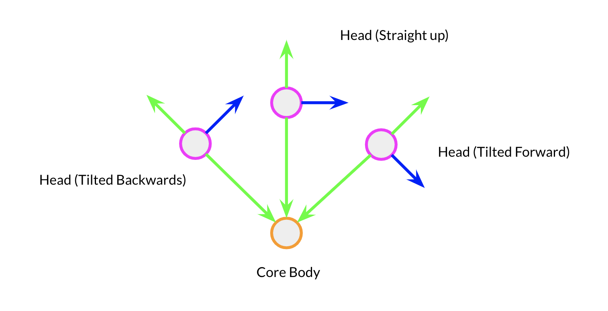
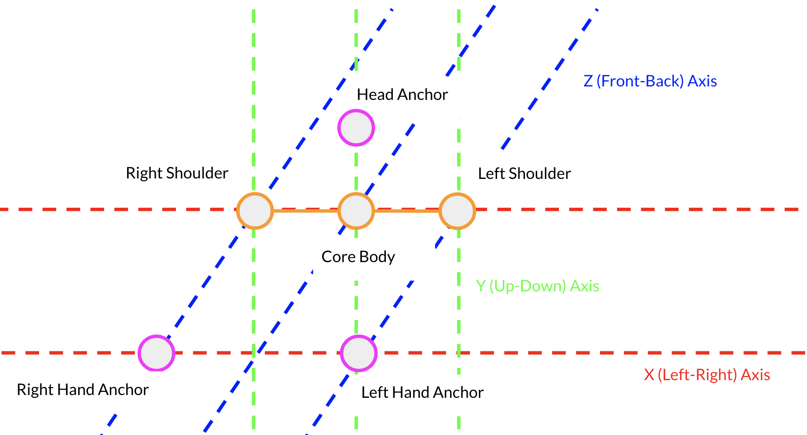
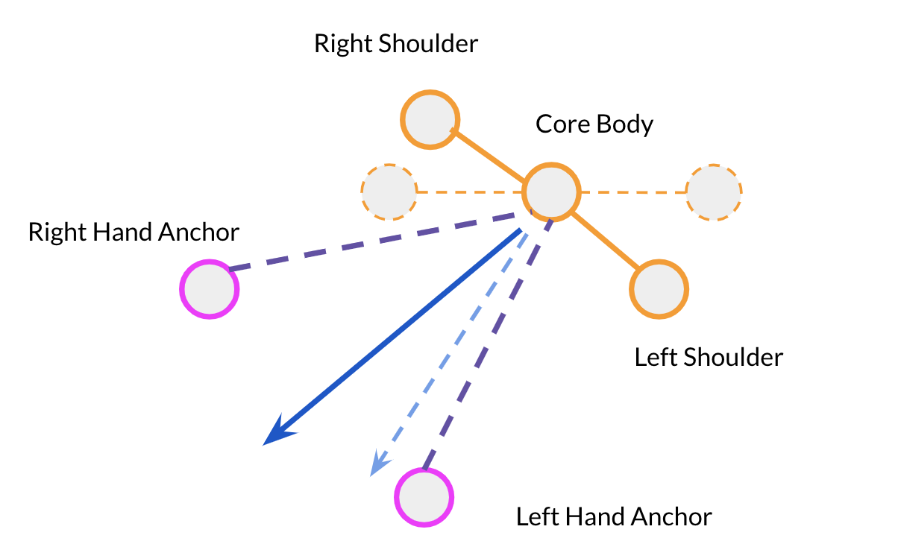

CS 184: Computer Graphics and Imaging, Spring 2019
Final Project: Inverse Kinematics Arms
Building a Body
Repackaging Inputs
Inverse Kinematics
Building a Body
Challenge:
While the VR tools provide reliable and powerful inputs via the headset and the two hand controllers, there is still a lot of important missing information for inverse kinematics. Inverse kinematics is straightforward with a well-defined model, such as those used for 3D animation -
every part of the model's body can be set and every part has a known and controllable location. This disappears with VR - in our scene, we only know the position and rotation of the headset, the left hand, and the right hand. This will quickly prove to be extremely limiting. Inverse kinematic needs a root for the joint chain and a tip to reach towards, and while
the hand defines the one end of the IK chain, the root should be the shoulder. But where is the shoulder? One of the central challenges of building our IK system was using our limited information from our VR inputs to approximate and predict the position of the user's body as best we could.
Choosing the Invariant: the Core Body transform
Finding a good spot to place the shoulder is hard. But if we can't place the shoulder, what can we place? The first thing to place is an approximation of where the user's body is located. The first obvious solution is to place the body with the headset, and have a transform (3d position in space + 3d rotation) follow the head anchor. However, this led to a issue -
turning your head shouldn't move your body. A natural reaction to seeing the IK arms would be to look at them, but if you turn to look at your arms, that would move your body, which would presumably move your shoulder, changing your arm's position. This was not desired behavior, so we came up with the concept of the Core Body transform - this transform with a fancy
name is simply an approximation of the body's position, correcting for any head rotations. This is done quite simply with a very basic neck model. The head is assumed to be at some constant offset from the shoulder-frame, with a point at the base of the neck, the midpoint between the shoulders, staying still while the head rotates. This point, the Core Body point,
moves with the rest of the body but isn't affected by head rotations. The headset records a position and rotation for the head, so by drawing a vector in the downwards direction from the head position, we should be always able to figure out the Core Body point. If the body stays still, the head can rotate around this Core Body point without moving it.
|

Head Tilts around the Core Body Position
|
Identifying the Core Body Point: Calibration
To identify this Core Body point, we decided to set up a calibration process. The user holds both arms out straight facing forward. The idea is that the arms should be parallel lines that draw out a plane in the front/back and left/right axes relative to the user. Since the arms are flat and straight out, we can set the shoulders at the same x and y as the hands, and the same z
as the user's head.
|

Calibration Visualization
|
Placing Shoulders: Identifying Core Body Orientation
With the above model, we can observe that the shoulders are placed on either side of the Core Body position. Intuitively, shoulders don't grow or shrink, so the shoulders should always be at some constant length away from the Core Body position, one to the left, one to the right. To dynamically move these shoulders to follow the user,
we need to identify which direction the body is facing, then place the left shoulder on the Core Body's left vector, and the right shoulder on the right vector. Here we must make a small compromise - the Core Body position must be split in two, one on each arm. Communicating information between the arms is too much work, and would require locks
and waiting for information in a real time context. This could bring in many issues reminiscent of 162, where threads need to communicate. To simplify, we simply assign a separate Core Body transform to each arm. In an ideal world, both transforms will end up in the same spot - experimentally, they end up very close, but with a small offset. In practice,
this sacrifice is minimal and has very little effect on the final result, so we judged it worth the compromise.
Now, given our inputs, the Core Body transforms, and the shoulders' offset from the Core Body, we need to find the body's orientation. Our first instinct was the orientation of the head. However, this poses many issues - the head should be able to move independently, and with this solution, moving the head would move the shoulders. Triggering shoulder movements,
which cause IK arm adjustments, without actually moving your arms is very visually strange for the user. We then came up with a different solution, which feels much much more natual to the user. In this scheme, the body is determined to be facing in the direction of the vector bisecting the two arm vectors - or the vectors pointing from the Core Body to the hands. This
means that the head can move independently, which was desired. If the body moves around, the Core Body will follow since the user will move their arms as well. The only downside is that moving one arm but not the other will still trigger a rotation in the Core Body and a readjustment in both shoulders. However, this feels much more natural as (1) the user is moving his arms,
so seeing arm movement is more expected, and (2) since the body adjusts with the bisecting vector, in the most extreme case of one arm not moving and the other moving, the rotation adjustment is halved.
|

Body Moves with Arm Rotations
|
Repackaging Inputs
Challenge:
Some of the inputs complicate math for the IK. The biggest offender here is the wrist rotation - the rotation in itself isn't necessarily a problem, but there is a lot of extra information that isn't relevant to the IK solver. For this reason, we separate a guide transform from the hand transform and use the guide for IK instead of the hand. The guide transform follows
the hand but adjusts the rotation such that the guide's up vector always points perpendicular to the shoulder-hand vector, which makes math more simple for vector visualization, etc. This is a pretty straightforward adjustment: we simply project the forward vector of the hand onto the shoulder-arm vector, then subtract the project from the up vector.
Inverse Kinematics
Challenge:
Inverse Kinematics can be broken down into, essentially, a fancy application of the Law of Cosines. Here, we have a few more inputs to keep track of, such as the wrist rotation, in order to ensure that the IK solution bends the arm in as natural a way as possible.
Law of Cosines: Determining Joint Angles
The first part is essentially just solving the Law of Cosines to determine the angles for the joints. We have 3 knowns: the upper joint length, the lower joint length, and the distance between the shoulder and the wrist/hand/target. These give us a triangle, so we can use these lengths to determine the angles.
Final Thoughts on IK:
The combination of all this math and these techniques gives us a surprisingly accurate IK arm. Turning the wrist will rotate the hand controller - the cross product of the hand's up and forward vector will follow and cause the IK plane to rotate, ensuring that the arm always bends in a way that looks natural. There were a few spots that
proved too difficult to totally solve in our limited time. Specifically, it was quite difficult to combine the built-in VR hand model with the arm model used for IK, as the wrists were very difficult to line up correctly all the time. A major difficulty here was that we didn't have full access to the logic behind the built-in VR hand - without
that, it was quite difficult to mathematically model and predict the position and orientation of the wrist of the VR hand to connect it to the IK arm wrist. Additionally, we were very limited in inputs - without knowing the actual position of the elbow, shoulder, etc, we had to make guesses. Most of the time, these are quite good guesses, but they are
certainly not perfect.